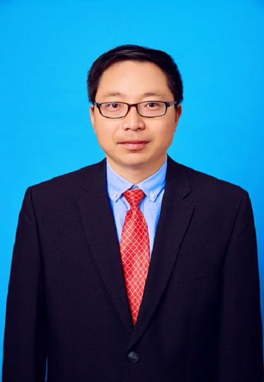

Chaofeng Ye (叶朝锋)
Associate Professor
ShanghaiTech University
Address:
Room 1D-301E, SIST Building, 393 Middle Huaxia Road
Pudong, Shanghai, 201210, China
Contact:
📧 Email: yechf@shanghaitech.edu.cn
📞 TEL: +86-21-20685366
Biography
Dr. Chaofeng Ye graduated from Michigan State University in the United States. In recent years, he has undertaken national and provincial-level projects such as the National Natural Science Foundation General Project, the National Natural Science Foundation Enterprise Innovation and Development Joint Fund Key Project, and the Shanghai Science and Technology Innovation Action Plan Instrument Field Special Project. He has established long-term cooperative relationships with numerous representative central enterprises and private high-tech enterprises. His entrepreneurial project has received funding from the National Innovation Center and the Baoshan District Government in Shanghai. He has been awarded the Shanghai University Distinguished Professor (Oriental Scholar), Pujiang Talent, Outstanding Teacher and Academy Mentor at ShanghaiTech University, First Prize in Innovation and Entrepreneurship at ShanghaiTech University, First Prize in COMAC Aircraft Innovation and Entrepreneurship Competition, and Teaching Achievement Award at Tsinghua University.
Research Interests
- Precision Sensing (精密传感)
- Non-destructive Testing (无损检测)
- Weak Magnetic Measurement (弱磁测量)
- Signal Processing (信号处理)
Projects
Research Grants & Programs
Industrial Collaborations
Members
- Faculty
- Staff
- PhD Students
- Graduate Students
- Undergraduate Students
- Alumnus
Publications
- Journal Papers
- Conference Proceedings
- Patents
News
Current Openings
We are looking for motivated students and researchers:
- Postdoc Researchers
- Ph.D. & Master Students
- Research Assistants
Contact us
电话：021-20685366 地址：上海市浦东新区华夏中路393号上海科技大学 邮编：201210